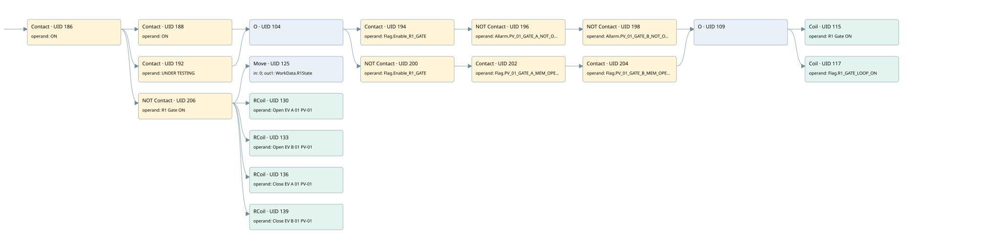

pv-01
r1 scraps gate 2 · 검색 색인 순서 1 · 원본 내부 NID 추정 1
백업 PLF 원본의 2825244 바이트 위치에서 복원한 XML. 검색 문서 1911의 객체 키 16102200d911000000000000와 연결했다. 이름 해석 18/18개. 남은 RefId는 상수 또는 미해석 참조다.
연결 구조 다시 그리기
원본 Part/PCon/Wire를 이용한 연결도다. TIA 화면의 래더 배치 또는 실행 결과를 재현한 그림은 아니다. 핀 연결은 아래 표와 원본 XML을 기준으로 읽는다. 노드 위에 마우스를 두면 피연산자 이름을 볼 수 있다.

접점·코일·블록과 피연산자
| Part UID | Gate | Negated 핀 | 연결 피연산자 |
|---|---|---|---|
| 186 | Contact | operand = ON | |
| 188 | Contact | operand = ON | |
| 192 | Contact | operand = UNDER TESTING | |
| 104 | O | ||
| 194 | Contact | operand = Flag.Enable_R1_GATE | |
| 196 | Contact | operand | operand = Allarm.PV_01_GATE_A_NOT_OPEN |
| 198 | Contact | operand | operand = Allarm.PV_01_GATE_B_NOT_OPEN |
| 200 | Contact | operand | operand = Flag.Enable_R1_GATE |
| 202 | Contact | operand = Flag.PV_01_GATE_A_MEM_OPEN | |
| 204 | Contact | operand = Flag.PV_01_GATE_B_MEM_OPEN | |
| 109 | O | ||
| 115 | Coil | operand = R1 Gate ON | |
| 117 | Coil | operand = Flag.R1_GATE_LOOP_ON | |
| 206 | Contact | operand | operand = R1 Gate ON |
| 125 | Move | in = 0; out1 = WorkData.R1State | |
| 130 | RCoil | operand = Open EV A 01 PV-01 | |
| 133 | RCoil | operand = Open EV B 01 PV-01 | |
| 136 | RCoil | operand = Close EV A 01 PV-01 | |
| 139 | RCoil | operand = Close EV B 01 PV-01 |
접점 경로를 펼친 조건식
Contact·O/A·비교기의 원본 연결을 읽기 쉽게 펼친 보조 해석이다. POWER는 전원 레일 시작을 뜻한다. 호출 블록·에지·타이머의 내부 동작과 다중 쓰기 순서는 이 표로 실행 검증하지 않았다. 미해석 핀과 RefId는 원문 연결표에서 확인한다.
| UID | 동작 | 대상 | 원본 접점 경로 | 내용 |
|---|---|---|---|---|
| 115 | Coil | R1 Gate ON | (((((ON OR (ON AND UNDER TESTING)) AND Flag.Enable_R1_GATE) AND NOT [Allarm.PV_01_GATE_A_NOT_OPEN]) AND NOT [Allarm.PV_01_GATE_B_NOT_OPEN]) OR ((((ON OR (ON AND UNDER TESTING)) AND NOT [Flag.Enable_R1_GATE]) AND Flag.PV_01_GATE_A_MEM_OPEN) AND Flag.PV_01_GATE_B_MEM_OPEN)) | 조건에 따른 Coil 기록 |
| 117 | Coil | Flag.R1_GATE_LOOP_ON | (((((ON OR (ON AND UNDER TESTING)) AND Flag.Enable_R1_GATE) AND NOT [Allarm.PV_01_GATE_A_NOT_OPEN]) AND NOT [Allarm.PV_01_GATE_B_NOT_OPEN]) OR ((((ON OR (ON AND UNDER TESTING)) AND NOT [Flag.Enable_R1_GATE]) AND Flag.PV_01_GATE_A_MEM_OPEN) AND Flag.PV_01_GATE_B_MEM_OPEN)) | 조건에 따른 Coil 기록 |
| 125 | Move | WorkData.R1State | (ON AND NOT [R1 Gate ON]) | Move 입력 0 |
| 130 | RCoil | Open EV A 01 PV-01 | (ON AND NOT [R1 Gate ON]) | 조건 성립 시 Reset |
| 133 | RCoil | Open EV B 01 PV-01 | (ON AND NOT [R1 Gate ON]) | 조건 성립 시 Reset |
| 136 | RCoil | Close EV A 01 PV-01 | (ON AND NOT [R1 Gate ON]) | 조건 성립 시 Reset |
| 139 | RCoil | Close EV B 01 PV-01 | (ON AND NOT [R1 Gate ON]) | 조건 성립 시 Reset |
원본 배선 연결
| Wire UID | 동일 Wire 연결 끝점 |
|---|---|
| 208 | Powerrail {} ↔ Part 186.in |
| 159 | ORef 140 (ON) ↔ Part 186.operand |
| 187 | Part 186.out ↔ Part 188.in ↔ Part 192.in ↔ Part 206.in |
| 160 | ORef 141 (ON) ↔ Part 188.operand |
| 26 | Part 188.out ↔ Part 104.in1 |
| 163 | ORef 143 (UNDER TESTING) ↔ Part 192.operand |
| 193 | Part 192.out ↔ Part 104.in2 |
| 164 | Part 104.out ↔ Part 194.in ↔ Part 200.in |
| 165 | ORef 144 (Flag.Enable_R1_GATE) ↔ Part 194.operand |
| 195 | Part 194.out ↔ Part 196.in |
| 166 | ORef 145 (Allarm.PV_01_GATE_A_NOT_OPEN) ↔ Part 196.operand |
| 197 | Part 196.out ↔ Part 198.in |
| 167 | ORef 146 (Allarm.PV_01_GATE_B_NOT_OPEN) ↔ Part 198.operand |
| 199 | Part 198.out ↔ Part 109.in1 |
| 169 | ORef 147 (Flag.Enable_R1_GATE) ↔ Part 200.operand |
| 201 | Part 200.out ↔ Part 202.in |
| 170 | ORef 148 (Flag.PV_01_GATE_A_MEM_OPEN) ↔ Part 202.operand |
| 203 | Part 202.out ↔ Part 204.in |
| 171 | ORef 149 (Flag.PV_01_GATE_B_MEM_OPEN) ↔ Part 204.operand |
| 205 | Part 204.out ↔ Part 109.in2 |
| 173 | Part 109.out ↔ Part 115.in ↔ Part 117.in |
| 174 | ORef 150 (R1 Gate ON) ↔ Part 115.operand |
| 175 | ORef 151 (Flag.R1_GATE_LOOP_ON) ↔ Part 117.operand |
| 177 | ORef 152 (R1 Gate ON) ↔ Part 206.operand |
| 207 | Part 206.out ↔ Part 125.en ↔ Part 130.in ↔ Part 133.in ↔ Part 136.in ↔ Part 139.in |
| 178 | ORef 153 (0) ↔ Part 125.in |
| 179 | Part 125.out1 ↔ ORef 154 (WorkData.R1State) |
| 180 | ORef 155 (Open EV A 01 PV-01) ↔ Part 130.operand |
| 181 | ORef 156 (Open EV B 01 PV-01) ↔ Part 133.operand |
| 182 | ORef 157 (Close EV A 01 PV-01) ↔ Part 136.operand |
| 183 | ORef 158 (Close EV B 01 PV-01) ↔ Part 139.operand |
식별자 해석 근거 18개
| ORef UID | RefId | 이름 | IdentXmlPart 파일 | 해석 방법 |
|---|---|---|---|---|
| 140 | 1 | ON | 0607-IdentXmlPart.xml | UID/RID + search-text + NID agreement |
| 141 | 1 | ON | 0607-IdentXmlPart.xml | UID/RID + search-text + NID agreement |
| 143 | 4 | UNDER TESTING | 0607-IdentXmlPart.xml | UID/RID + search-text + NID agreement |
| 144 | 6 | Flag.Enable_R1_GATE | 0609-IdentXmlPart.xml | UID/RID + search-text + NID agreement |
| 145 | 8 | Allarm.PV_01_GATE_A_NOT_OPEN | 0609-IdentXmlPart.xml | UID/RID + search-text + NID agreement |
| 146 | 9 | Allarm.PV_01_GATE_B_NOT_OPEN | 0609-IdentXmlPart.xml | UID/RID + search-text + NID agreement |
| 147 | 6 | Flag.Enable_R1_GATE | 0609-IdentXmlPart.xml | UID/RID + search-text + NID agreement |
| 148 | 10 | Flag.PV_01_GATE_A_MEM_OPEN | 0609-IdentXmlPart.xml | UID/RID + search-text + NID agreement |
| 149 | 11 | Flag.PV_01_GATE_B_MEM_OPEN | 0609-IdentXmlPart.xml | UID/RID + search-text + NID agreement |
| 150 | 12 | R1 Gate ON | 0607-IdentXmlPart.xml | UID/RID + search-text + NID agreement |
| 151 | 13 | Flag.R1_GATE_LOOP_ON | 0609-IdentXmlPart.xml | UID/RID + search-text + NID agreement |
| 152 | 12 | R1 Gate ON | 0607-IdentXmlPart.xml | UID/RID + search-text + NID agreement |
| 153 | 16 | 0 | 0610-IdentXmlPart.xml | literal candidate: UID/RID/NID + nearby named declarations + search-text agreement |
| 154 | 18 | WorkData.R1State | 0609-IdentXmlPart.xml | UID/RID + search-text + NID agreement |
| 155 | 20 | Open EV A 01 PV-01 | 0607-IdentXmlPart.xml | UID/RID + search-text + NID agreement |
| 156 | 21 | Open EV B 01 PV-01 | 0607-IdentXmlPart.xml | UID/RID + search-text + NID agreement |
| 157 | 22 | Close EV A 01 PV-01 | 0607-IdentXmlPart.xml | UID/RID + search-text + NID agreement |
| 158 | 23 | Close EV B 01 PV-01 | 0607-IdentXmlPart.xml | UID/RID + search-text + NID agreement |
검색 코드 보조 자료
참조 명칭을 찾기 위한 자료이며 실행 순서나 AND/OR 관계는 위 연결표로 확인한다.
"on" "on" "flag".enable_r1_gate "allarm".pv_01_gate_a_not_open "allarm".pv_01_gate_b_not_open "r1 gate on" "under testing" "r1 gate on" move 0 "open ev a 01 pv-01" "open ev b 01 pv-01" "close ev a 01 pv-01" "close ev b 01 pv-01" "workdata".r1state "flag".enable_r1_gate "flag".pv_01_gate_a_mem_open "flag".pv_01_gate_b_mem_open "flag".r1_gate_loop_on